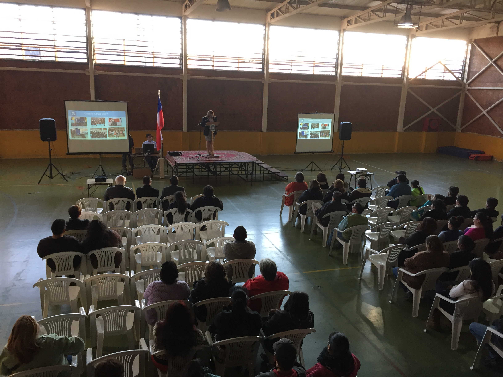

<!DOCTYPE html>
<html lang="en"></html>
<head>
  <meta charset="UTF-8"/>
  <title>Escuela Libertad Puerto Montt</title>
  <link rel="stylesheet" href="../css/noticia.css"/>
</head>
<body>
  <div class="banner1"></div>
  <div class="banner2"></div>
  <section id="nav_cero">
    <div class="box_one">
      <h1>Escuela <span>Libertad</span></h1>
    </div>
    <div class="box_two">
      <nav>
        <ul>
          <li><a href="/index.html">Home</a></li>
        </ul>
        <ul>
          <li><a href="/historia.html"><span>Historia</span></a></li>
        </ul>
        <ul>
          <li><a href="/integracion.html">Integracion</a></li>
        </ul>
        <ul>
          <li><a href="/planespropios.html"><span>Talleres</span></a></li>
        </ul>
        <ul>
          <li><a href="/ProyectoEducativo.html">PEI</a></li>
        </ul>
      </nav>
    </div>
  </section>
  <div class="wrap">
    <h3>8 de Abril de 2017</h3>
    <div class="cabenoticia">
      <h1>CUENTA ANUAL</h1>
    </div>
    <div class="noticiacero"></div>
    <div class="cab__noticia">
      <h1>Director(a) del establecimiento hizo entrega de cuenta anual</h1>
    </div>
    <div class="noticiauno">
      <div class="not__parr">
        <p>A comienzo del mes de abril, la Directora del establecimiento da a conocer a la comunidad escolar la cuenta de su gestión año 2016. </p>
        <p>Para dar cumplimiento y lograr los Objetivos de Aprendizajes, el establecimiento dispuso de diversos recursos y ha genero lazos con la comunidad  a fin de apoyar  el proceso formativo y académico  favoreciendo la diversidad y la inclusividad escolar.</p>
        <p>En lo pedagógico, nuestra escuela se define y tiene como sentido institucionales la capacitación básica en el área tecnológica manual, en el 2do ciclo básico, con Resolución Ministerial, en las asignaturas de Corte y Confección, electromecánica básica y Tecnología en madera, certificándose al egreso de la enseñanza básica con 304 horas, especificado en el Reglamento Interno de Evaluación. </p>
        <p>Como somos una escuela inclusiva, atendemos a una gran cantidad de alumnos con Necesidades Educativas Especiales (NEE) en la atención a las capacidades diferentes, en el área cognitiva (CI Limítrofe, CI Leve, CI Moderado), Auditiva, Hipoacusico y Sordos, Trastornos del Espectro Autista, Asperger, Retardo Generalizado del Desarrollo, Trastorno Déficit Atencional, Trastornos Específicos del Aprendizaje, y Trastornos Específicos del Lenguaje.</p>
        <p>Además, nuestro establecimiento entrega una atención a la diversidad de los estudiantes, con diversidad de género, nacionalidad, etnia, religión, condición socioemocional, económica, intelectual, y embarazo adolecente. </p>
        <p>Para poder atender, a esta diversidad de alumnos contamos con Redes de Apoyo, como Red Enlace, SENDA, NOVASUR, PUENTE, PIE, CESFAM, JUNAEB, ACCIONA, PLAN FOMENTO LECTOR, PLAN DE MEJORAMIENTO EDUCATIVO, HABILIDADES PARA LA VIDA, CONVIVENCIA ESCOLAR, Educación Física para Pre-Básica, Seguridad Escolar, Alumnos en Práctica de variadas universidades. </p>
        <p>También reforzamos, internamente, con Talleres deportivos, Talleres Artísticos Culturales, Talleres de Formación Ciudadana, y fuera del establecimiento Academia de Inglés. Siendo todos estos actividades extracurriculares. </p>
        <p>Los valores sustentan nuestro Proyecto Educativo Institucional (PEI) y permiten desarrollar la misión de la escuela. Entre ellos se pueden destacar: Responsabilidad, Respeto, Tolerancia, Solidadaridad, Honradez, Libertad, Honestidad, Perseverancia, Lealtad, Convivencia, Formación Ciudadana. </p>
        <p>En relación al reconocimiento destacamos al mejor rendimiento y a la mejor asistencia. </p>
        <p>Durante el año, nuestros alumnos participaron en variadas actividades, las más destacadas fueron: La participación en las Olimpiadas para Sordos, en la localidad de la Serena, en la cual nuestros alumnos lograron una medalla de hora, dos de plata y 3 de bronce. La participación de nuestros niños de 1er año básico en cuenta cuento, con una escritora de renombre nacional, la creación por parte del Equipo PIE de un CD en lenguaje de Señas, con la participación de nuestros alumnos Sordos, en la temática de un Diccionario de Pueblos Originarios, Taller de Lengua de Señas en verano dirigida a la comunidad por nuestro docente Rodrigo Silva, Actos varios, entre lo que se destaca la despedida de quien fuera nuestro director por 29 años, don Jorge Águila Silva, y de nuestro Sub-Director don Miguel Mansilla. </p>
        <p>El día 15 de Junio del año 2016, se constituye democráticamente, nuestro primer Centro de Padre y Apoderados del establecimiento. </p>
        <p>Con fecha 13 de Junio del Año 2016, se forma democráticamente eligiéndose por primera vez nuestro Centro de Alumnos del establecimiento. </p>
        <p>En lo que se refiere a fortalezas con las que cuenta nuestro establecimiento podemos mencionar Equipo de Gestión, Consejo Escolar, Comité paritario, Centro de Padres, Biblioteca CRA, Laboratorio de Ciencias, Sala de Computación, Laboratorios móviles de computación, Planes Propios, Taller de Futbol, Taller de Folklor, Academia de Ingles, Docentes de Apoyo, Asistentes de Aula, Equipo Multitudinario de Profesionales, PIE, Equipo Psicosocial, JEC desde Pre-Básica, Movilización Municipal entre otros.</p>
        <p>Nuestra escuela actualmente está clasificada como una escuela Autónoma por sus buenos logros Académicos e integrales en el área social, esto se debe  gracias a toda la planta Docente y Asistentes de la Educación del  establecimiento.</p>
        <p>
          Esta directora agradece infinitamente a todos los colaboradores y redes de apoyo, su permanente apoyo y entrega. Quedando invitados a seguir formando parte de este Proyecto Educativo.
          
        </p>
        <p>
          Un Abrazo fraterno a todos(as)
          
        </p>
        <p>
          Sra.  María Rosalía Ulloa Uribe
          
          
        </p>
      </div>
      <div class="box__fotografia_face"></div>
    </div>
    <div class="box__comentario"></div>
    <footer>
      <div class="direccion"><span class="icon-compass"></span>
        <h1>Dirección: Iquique 230, Poblacion Libertad - Puerto Montt</h1>
      </div>
      <div class="telefono"><span class="icon-phone"></span>
        <h1>Telefono : 65 2 484525</h1>
      </div>
      <div class="mail"><span class="icon-inbox"></span>
        <h1>libertad@escuelas.dempuertomontt.cl</h1>
      </div>
      <div class="face"><a href="https://www.facebook.com/esc.libertad.39"><span class="icon-facebook-official"></span></a></div><span class="icon-youtube-square"></span>
    </footer>
  </div>
</body>